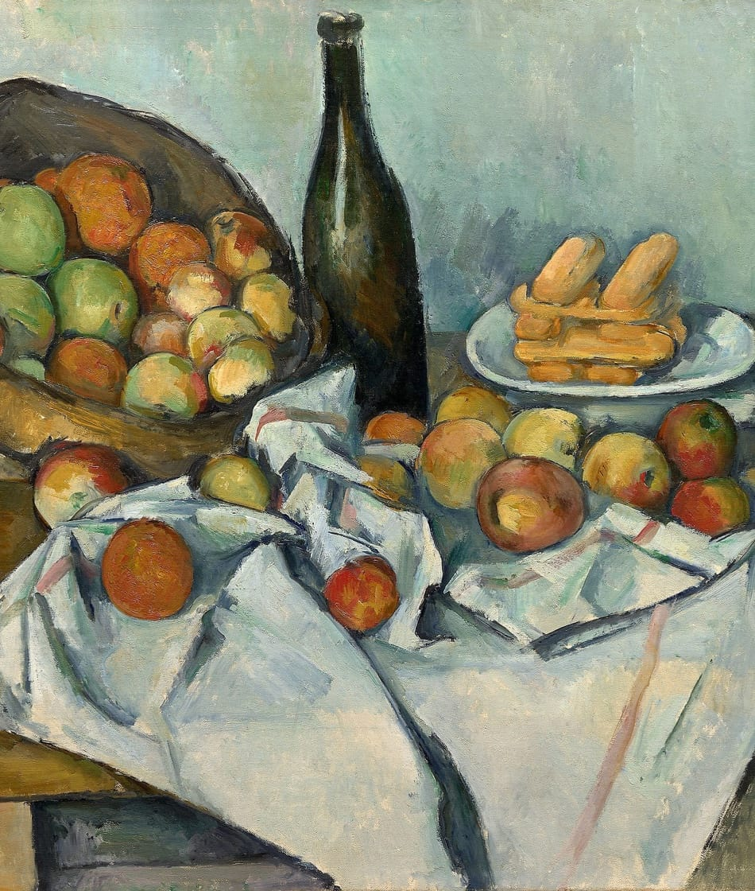
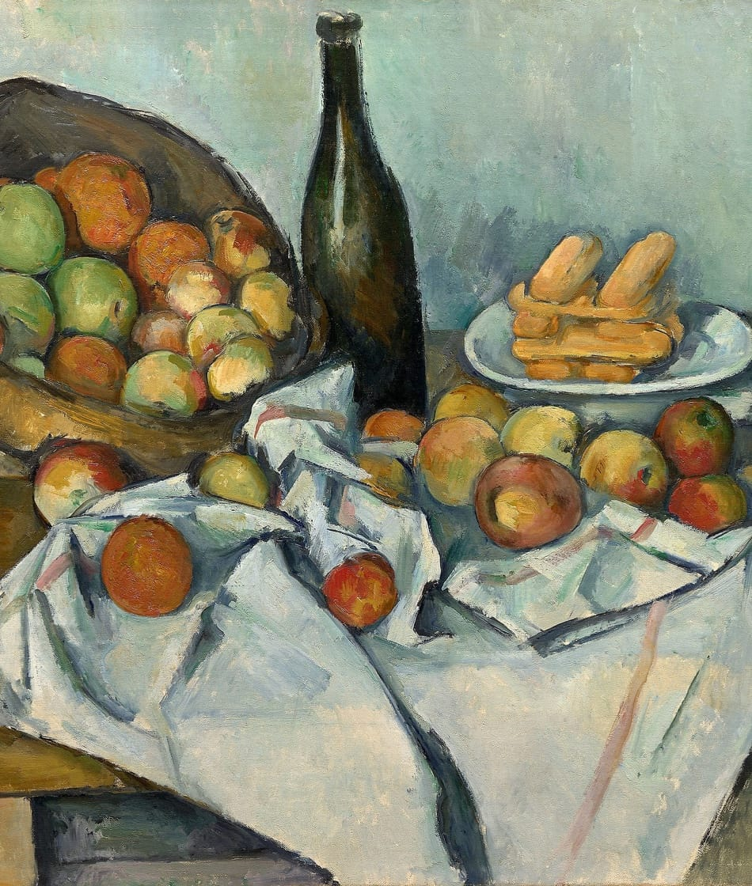

 The Basket of Apples
Paul Cézanne

The Basket of Apples (French: Le panier de pommes) is a still life oil painting by French artist Paul Cézanne, which he created c. 1893. The painting is particularly remarkable for its creative composition, which rejected realistic representation in favour of distorting objects to create multiple perspectives. This approach eventually influenced other art movements, including Fauvism and Cubism. It belongs to the Helen Birch Bartlett Memorial Collection of the Art Institute of Chicago.